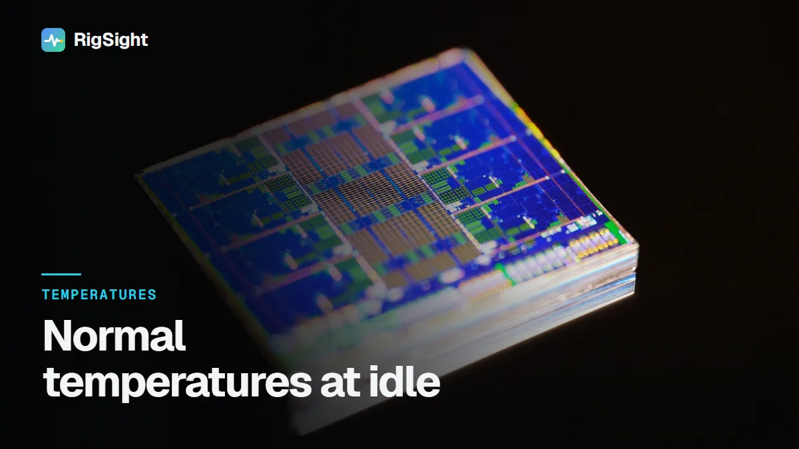
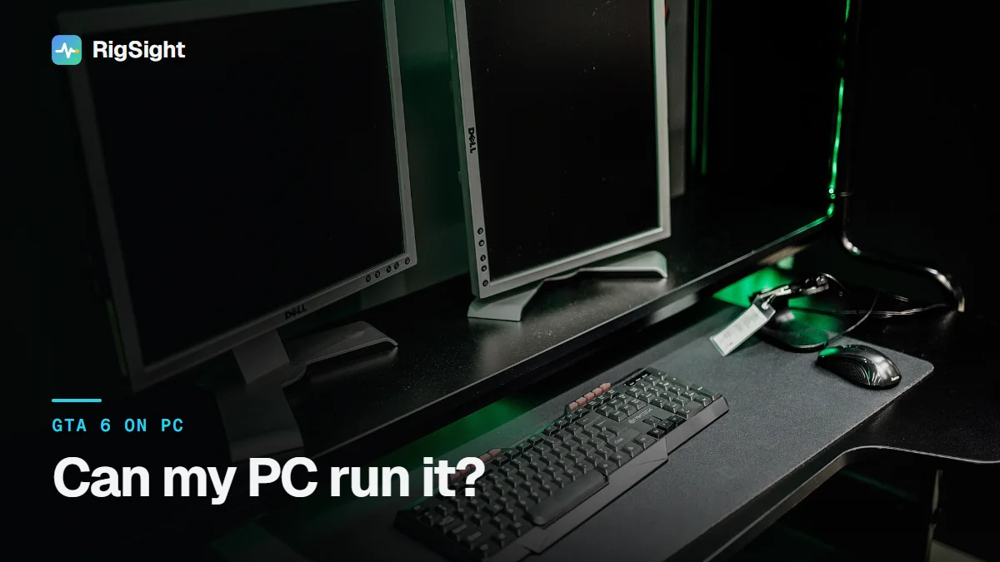
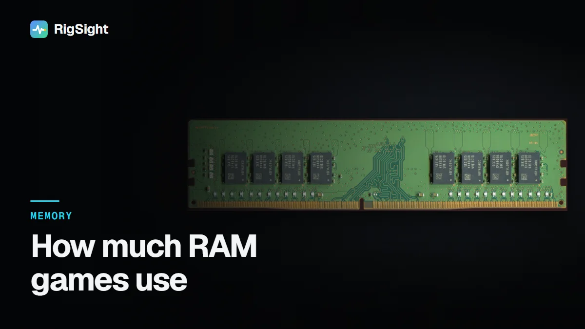
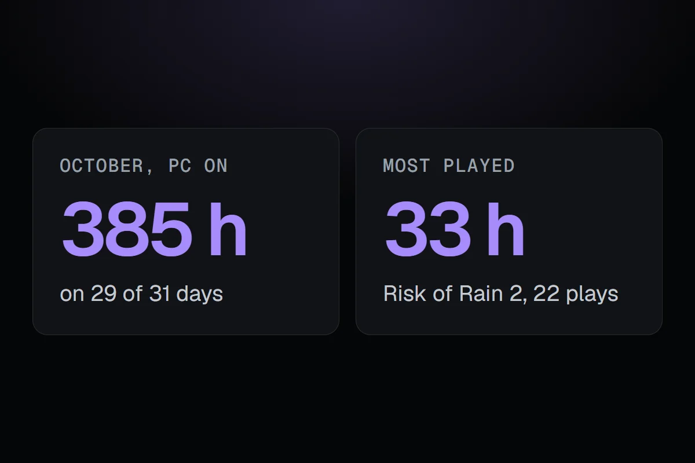
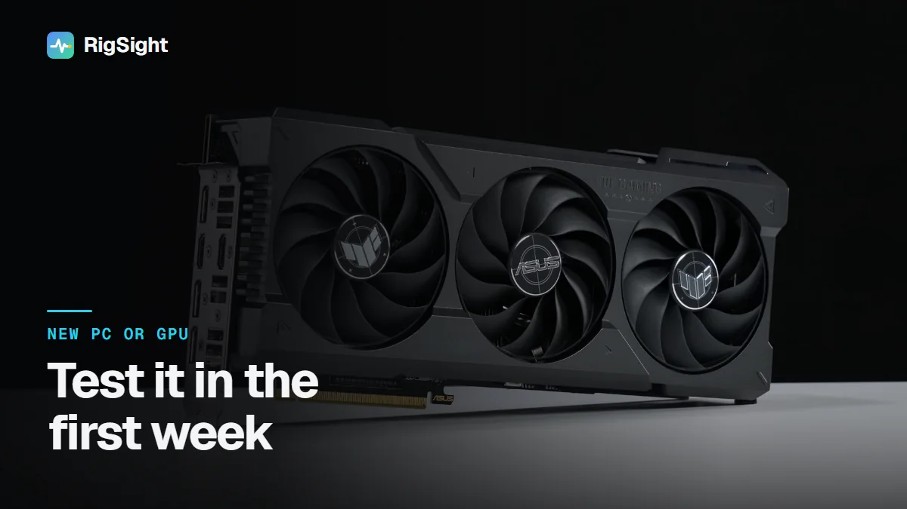
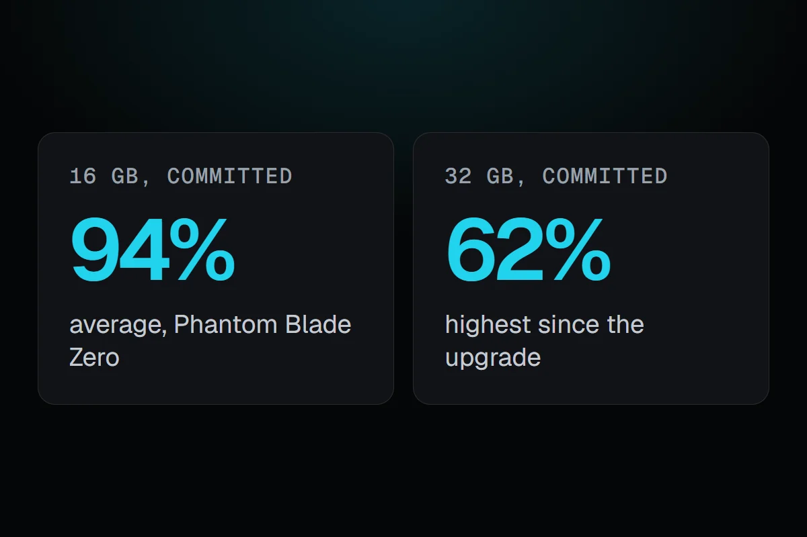
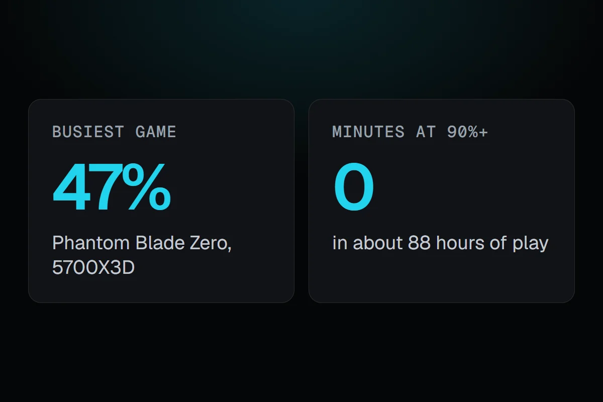
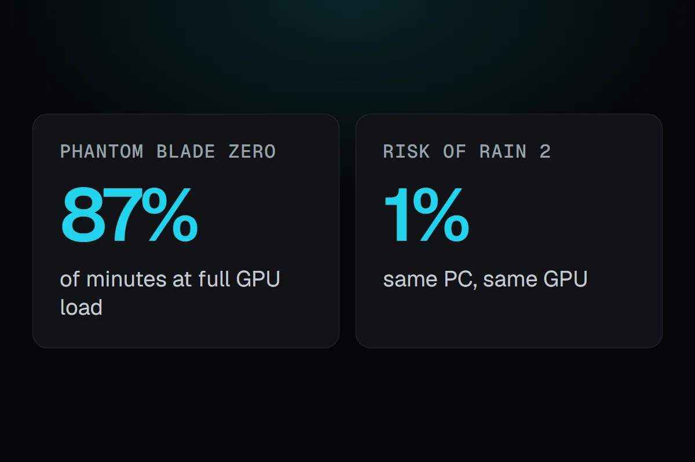
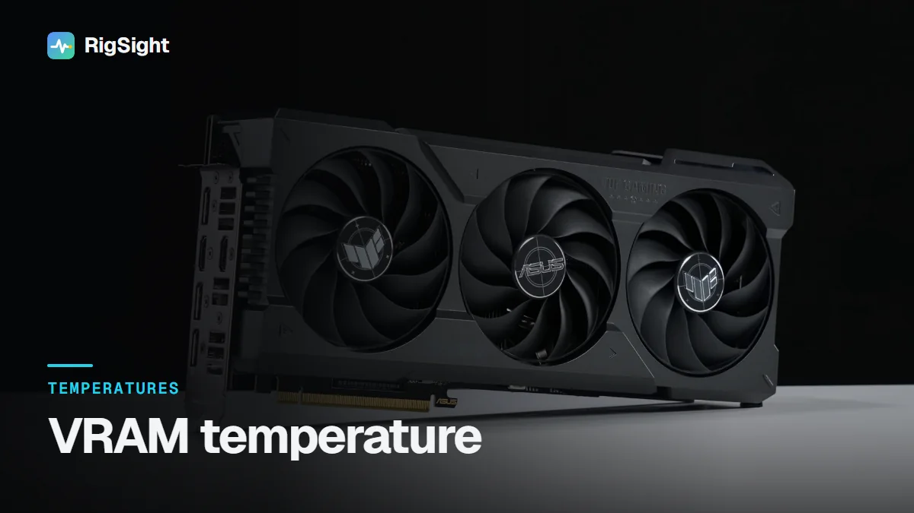
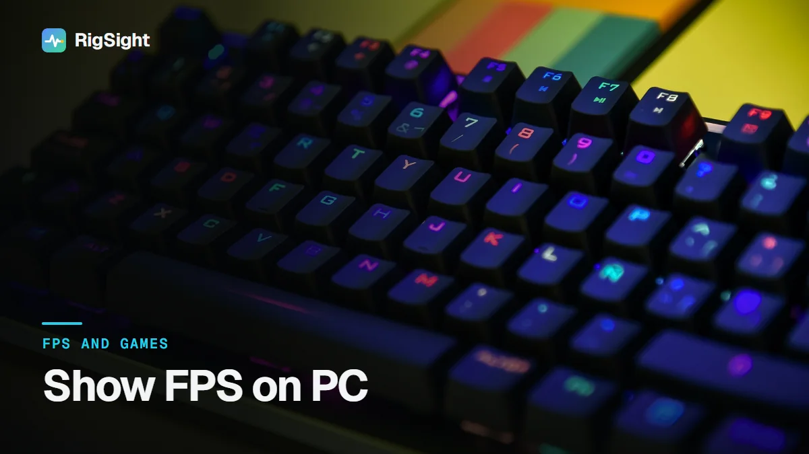

RigSight blog
The RigSight log
Building a PC monitor that keeps your PC's history. What broke, what got fixed, and the AI helper it is growing into. And the PC problems RigSight catches, why they happen and how to fix them.
Start at the beginning with Day one, and 25 versions before midnight or part 1 of the AI journey.
-

PC problems · Temperatures
Normal CPU temp at idle, and the GPU's, from 150 hours of mine
Idle, my Ryzen 7 5700X3D sat at about 48°C and my RTX 3080 Ti at about 48°C too, over about 150 hours of minutes. What a normal CPU and GPU temp at idle is, why it jumps around, and when a warm idle is worth fixing.
-

PC problems · FPS and games
Can my PC run GTA 6? What's known about the PC version
GTA 6 comes out on 19 November on PS5 and Xbox, and Rockstar hasn't announced a PC version or PC requirements. What's known, why the spec lists you see are guesses, and how your heaviest game today tells you more about your PC than any of them.
-

PC problems · Storage and memory
Normal RAM usage while gaming, and how much games really use
When my PC had 16 GB, Phantom Blade Zero used about 4 GB of memory itself, while the whole PC sat at nearly 14 GB. What normal RAM usage while gaming looks like, how much games use, and when it's too much.
-

Building RigSight
A year in review from your own PC, not only Steam
Steam Replay arrives in mid-December and covers your Steam games. RigSight's year Rewind is made from your own PC's history once the year ends, with every game, the hottest moments and what went wrong. What goes in it, and what my October looked like.
-

PC problems · Temperatures
How to test a new PC or GPU you got for Christmas
A new GPU or PC is easiest to check in its first week, while it can still go back, and its first two weeks become the normal you compare against for years. How to test a new GPU or PC, what to look at on a used one, and what RigSight records from day one.
-

PC problems · FPS and games
What to upgrade in my PC first? My RAM upgrade, before and after
I went from 16 to 32 GB of memory on 14 November. Windows' committed memory dropped from 94% in my heaviest game to never above 62%, but Dota 2 ran about the same. How to find what to upgrade in your PC first, from what it already does.
-

PC problems · FPS and games
Normal CPU usage while gaming, and when 100% isn't
My Ryzen 7 5700X3D averaged between 13% and 47% busy across six games and never reached 90% in any minute of play. What normal CPU usage while gaming looks like, why 100% is different from GPU usage, and how to fix it.
-

PC problems · FPS and games
Normal GPU usage while gaming, and why 99% is a good sign
On my PC, Phantom Blade Zero kept the GPU 95% busy or more 87% of the time, and Risk of Rain 2 only 1% of the time. What normal GPU usage while gaming looks like, why near 100% is fine, and what low usage tells you.
-

PC problems · Temperatures
VRAM temperature while gaming, and what's normal for GPU memory
My RTX 3080 Ti's memory averaged 78°C over about 100 hours of heavy gaming and never went above 84°C. What VRAM temperature is normal, where it gets too hot, how to check it, and how to bring it down.
-

PC problems · FPS and games
How to show FPS on PC with an overlay, and fix RivaTuner
My PC already has four FPS overlays, from Windows, Steam, NVIDIA and RivaTuner. How to show FPS on PC with each of them, which to pick, what to do when the RivaTuner overlay is not showing, and how RigSight keeps the numbers after the game.